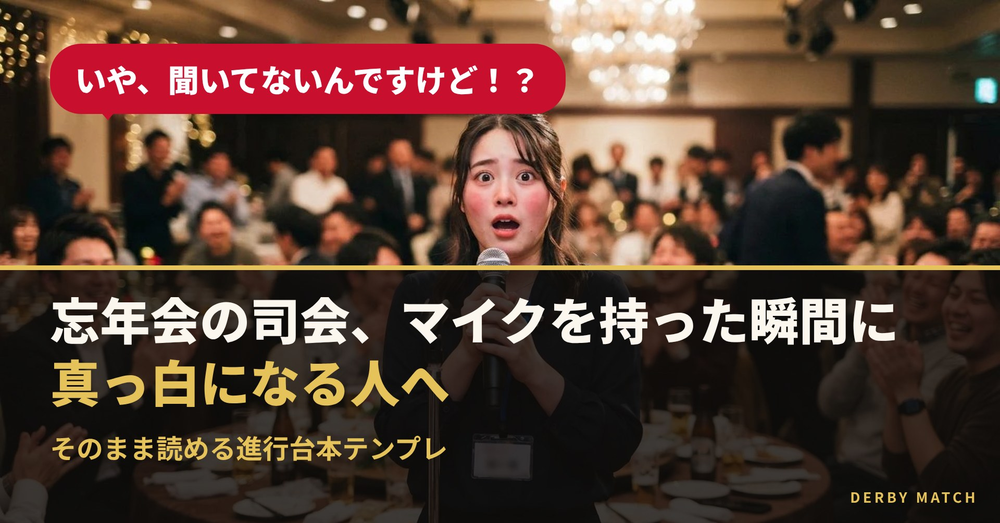
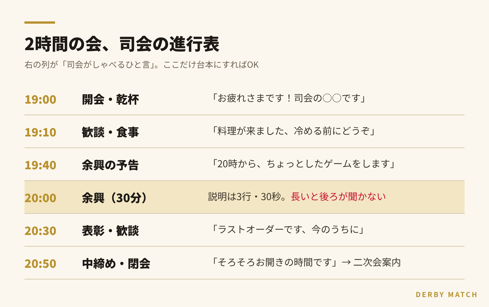
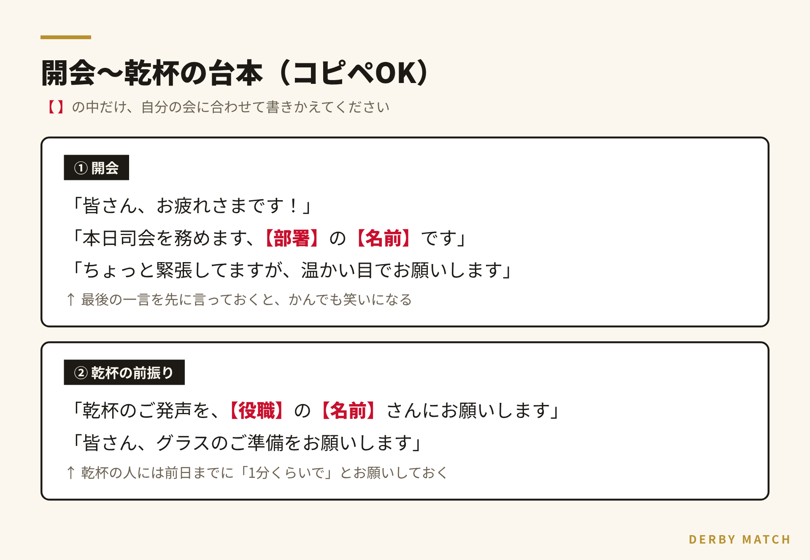
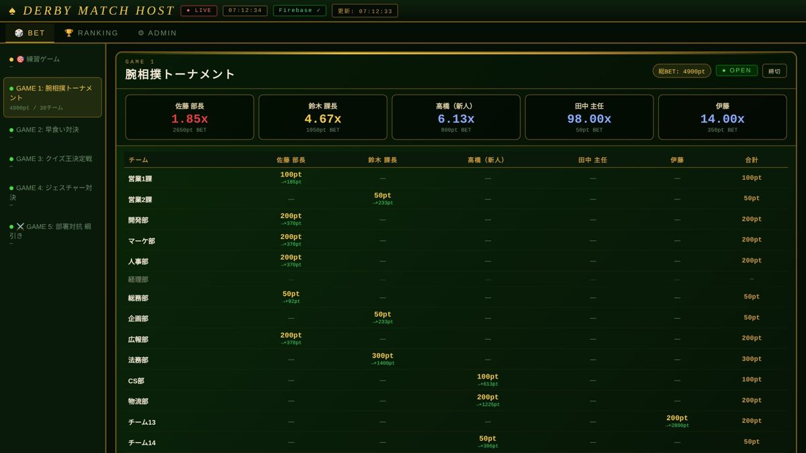
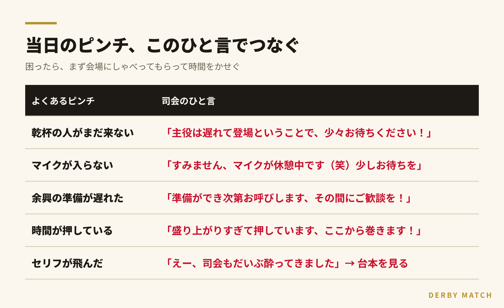
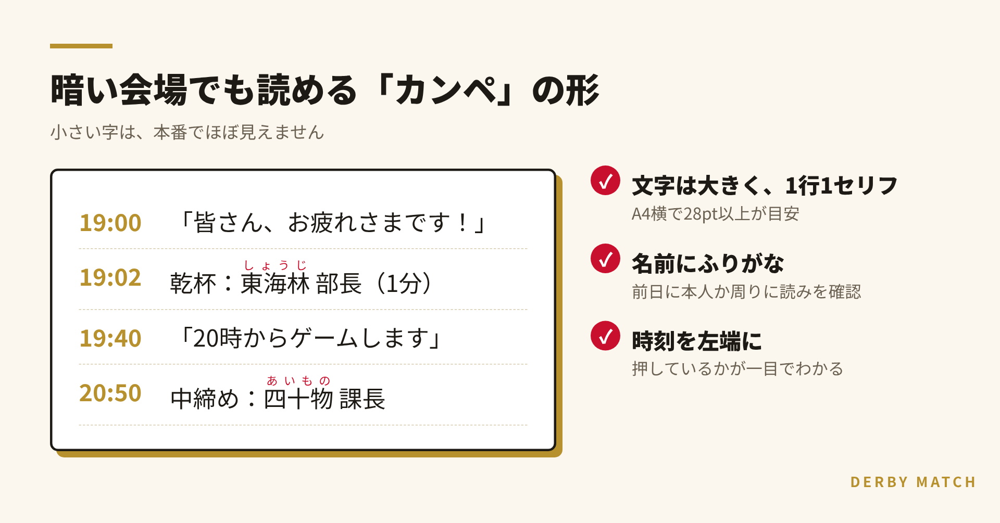

マイクを渡された瞬間、会場がシーンとなる。
100人ぶんの視線が、なぜか全部こっちに来る。
「えー……それでは……えー……」
幹事あるあるの、あの数秒です。
しかも幹事は、なぜか司会もセットでついてきがち。
いや、聞いてないんですけど！？
というわけで、「幹事兼司会」の人のための台本集です。
セリフをそのまま読めば、会が前に進む形にしました。
こんな人に向けて書きました
読むと手に入るもの
司会が緊張するのは、実は乾杯の挨拶ではありません。
いちばん怖いのは、コーナーとコーナーの間です。
「次、何て言うんだっけ」と考えた5秒。
この間に、会場の空気がスッと冷えます。
で、焦って「えー」が増える。
逆に言えば、つなぎのひと言さえ台本にあればOK。
上手に話す必要はありません。
「次に何をするか」を言えれば、司会は合格です。
台本の前に、進行表を1枚つくります。
よくある2時間の会なら、下の形で十分です。

ポイントは、余興を「料理が落ち着いた頃」に置くこと。
乾杯直後は、みんな食べるのに忙しいからです。
お腹がすいてる人に、クイズの答えは浮かびません。
ラストオーダーの時間も、先にお店に確認しておきます。
ここを知らないと、中締めのタイミングがずれます。
ここからは、そのまま読める台本です。
【 】の中だけ、自分の会に合わせて変えてください。
開会のひと言
「皆さん、お疲れさまです！」
「本日司会を務めます、【部署】の【名前】です」
「ちょっと緊張してますが、温かい目でお願いします」
最後の一文は、地味に効きます。
先に言っておくと、多少かんでも笑いに変わるからです。
乾杯の前振り
「それでは乾杯のご発声を、【役職】の【名前】さんにお願いします」
「皆さん、グラスのご準備をお願いします」
乾杯の人には、前日までに必ず声をかけておきます。
当日いきなり頼むと、だいたい長くなります。
「1分くらいで」と添えるのも忘れずに。

歓談中も、司会の出番はけっこうあります。
地味ですが、ここで会の「回りやすさ」が決まります。
ゲームの予告は、早めに一回入れておくのがコツ。
「何かあるらしい」と思わせておくと、本番の集まりが速い。
余興でいちばん冷えるのは、ルール説明が長いときです。
3分しゃべったら、後ろのテーブルはもう聞いていません。
……あれ、こっち見てない？という悲しい瞬間。
なので台本は、この3行に絞ります。
説明がいらない余興って、それだけで強い。
ビンゴは「数字を開けるだけ」なので、誰でもわかります。
準備も少なく、司会の負担も軽い定番です。
チームで盛り上がりたいなら、予想ゲームもひとつの手です。
約300人の社内イベントで私が使ったのは、DERBY MATCHです。
チームで相談して、スマホから仮想ポイントを賭ける形です。
お金は賭けず、アプリも個人情報の登録もいりません。
無料の体験版で、司会の画面を先にのぞけます。

どの余興でも、台本のセリフは同じ形で作れます。
「これから○○をします！」
「参加は△△、1位には□□！」
これだけ言えれば、あとはゲームが勝手に進みます。
終わりの時間が近づいたら、5分前に声をかけます。
「皆さん、そろそろお開きの時間です」
「中締めのご挨拶を、【役職】の【名前】さんにお願いします」
中締めの人にも、事前のお願いを忘れずに。
一本締めか三本締めかも、本人に聞いておくと安心です。
本番で「えっ、三本？」となるのは、わりと気まずい。
閉会と二次会の案内
「以上で、本日の会はお開きです！」
「ありがとうございました！」
「二次会は【店名】です」
「参加の方は、入口に集まってください」
「お忘れ物のないよう、お気をつけてお帰りください」
台本どおりに進まないのが、宴会の本番です。
よく聞くピンチと、その場をつなぐひと言をまとめました。

いちばん使えるのは「少々お待ちください、その間にご歓談を！」です。
これを言えば、会場は勝手にしゃべり出します。
司会は、その間に裏で立て直せばいいんです。
マイクが入らないときは、無理に地声で頑張らないこと。
お店の人を呼んで、その間は手を挙げて合図すれば十分です。
ちなみに台本、作っただけだと当日まず読めません。
暗い会場で、小さい字は本当に見えないからです。
特に名前の読みは、前日に必ず確認します。
役員の名前をまちがえるのは、幹事界の悪夢です。

ここまでの話を、ざっくり4行で。
うまく話そうとしなくて、ほんとに大丈夫。
会場の人は、司会のトークを聞きに来ていません。
楽しく飲んで、帰りたいだけです。
だから、次へ進めてくれる司会がいちばんありがたい。
余興に予想ゲームを試してみたい方へ
DERBY MATCHの無料体験版は、登録なしで触れます。
詳しくは公式サイトとBOOTHへ（3,980円〜・買い切り）。
法人の請求書払いや、設定の代行もご相談いただけます。
役に立ったら、スキやコメントをもらえるとうれしいです。
次はこれをどうぞ